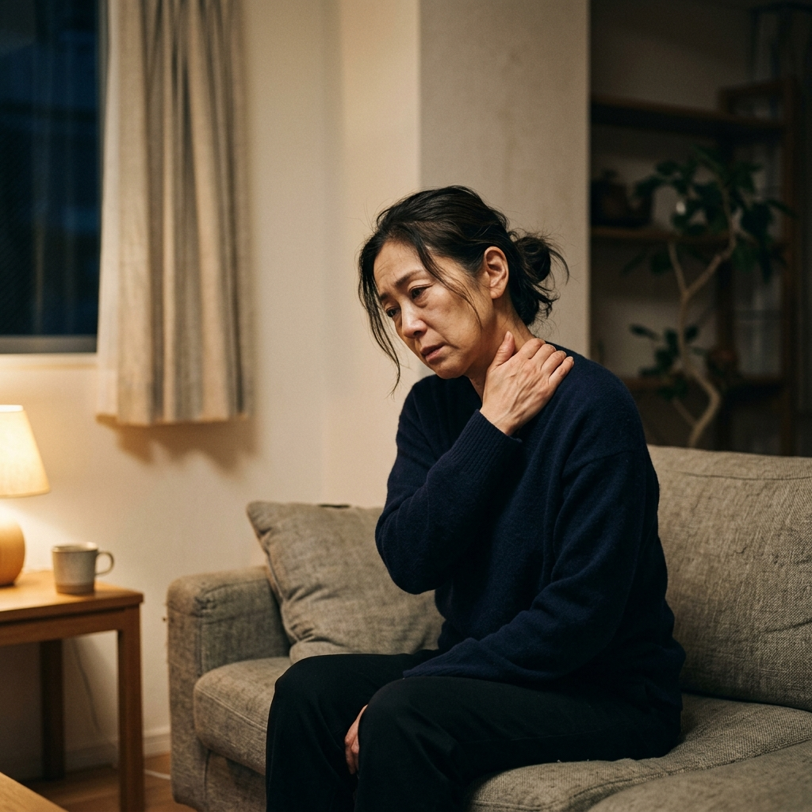
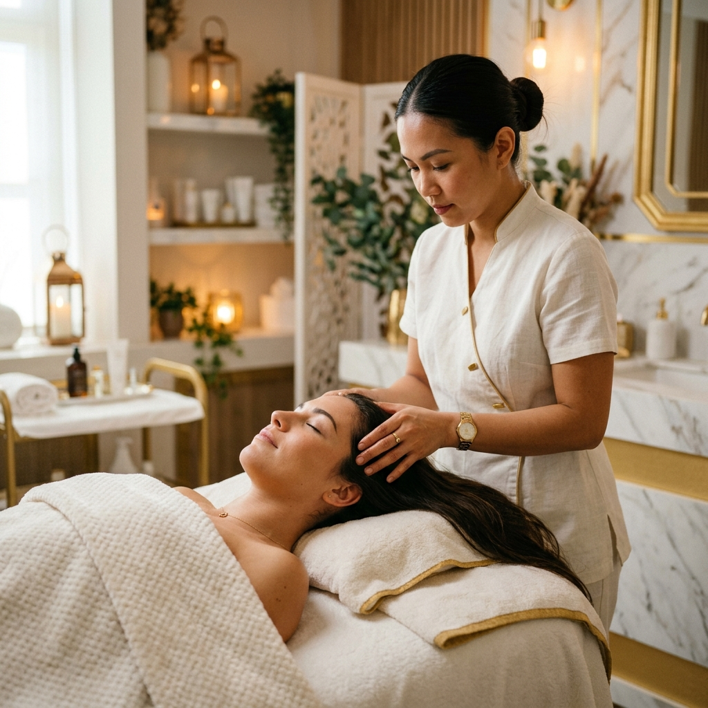
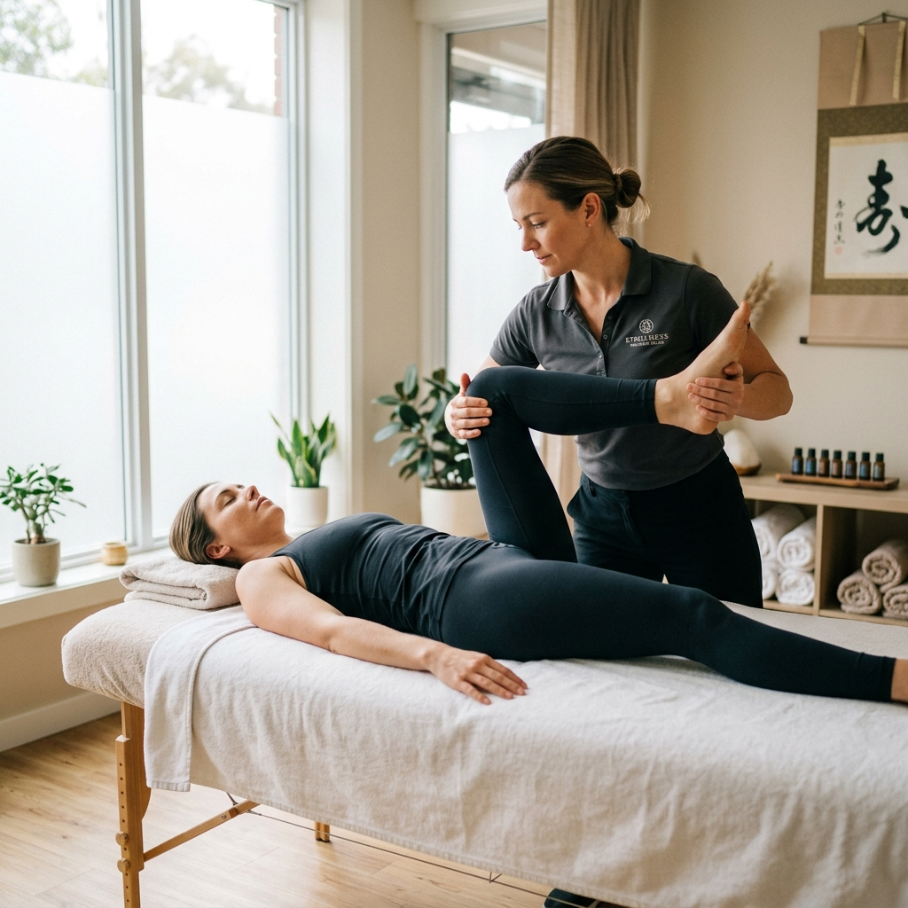
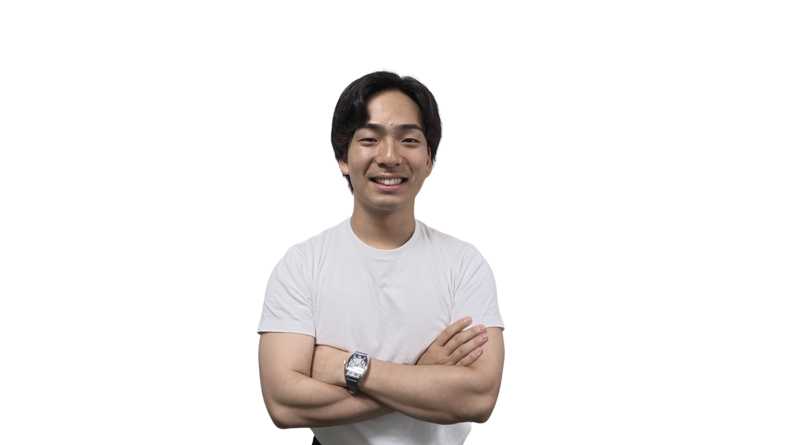

Recovery & Conditioning
大阪府箕面市・如意谷
ただ癒すだけでは終わらせない。
回復のためのヘッドセラピー × 経絡ストレッチ専門店
＼ LINE予約限定 初回半額 ／
公式LINEで初回半額を予約するTroubles

普通のマッサージで筋肉をほぐしてもすぐに戻ってしまうのは、脳が休まっていないからです。
神経が張ったまま、首や頭まわりが常に緊張し、身体の巡りやバランスが崩れている状態。
この根本的な「脳疲労」と「身体の構造の崩れ」の両方にアプローチしなければ、本当の意味での休息は得られません。
Concept
「脳と身体を同時にリセットする」
theoryは、よくあるリラクゼーションサロンや、筋肉を伸ばすだけのストレッチ店ではありません。
頭と身体を同時に整えることで、はじめて深い回復につながるというロジックに基づき、
その場しのぎではない、日常が軽くなる方向へ導く専門店です。

一般的なヘッドスパのような「気持ち良さ」や美容中心のケアとは異なります。
theoryのヘッドセラピーは、頭をほぐすだけでなく、頭蓋・首・神経バランスに着目。
脳疲労、自律神経の乱れ、睡眠の質の低下、眼精疲労にしっかりとアプローチし、終わった後の「頭の軽さ」「スッキリ感」を引き出します。

ただ筋肉を強く伸ばすのが目的ではありません。
身体全体のライン、巡り、関節、そして神経の通り道まで踏まえて整える、独自のストレッチ技術です。
リラックスしながら身体がゆるみ、動きやすくなる感覚。慢性的な肩・首・腰・脚の重さにも対応します。
頭だけ整えても身体の歪みによってすぐに戻ってしまい、身体だけ整えても脳が休まりません。
両方を同時に整えるからこそ、休まり方の「深さ」が変わります。眠り、軽さ、整う感覚を取り戻す、至福の回復体験をお約束します。
Therapist

鍼灸の国家資格（はり師・きゅう師）を取得後、鍼灸整骨院で多くの患者様の身体と真摯に向き合ってまいりました。
私自身、長年スポーツを続ける中で、怪我や慢性的な不調に何度も悩まされてきました。その折、親身になって身体を改善に導いてくれた治療家との出会いが、この道を志す原点です。
「自分と同じように、不調で悩む人を助けたい。」
解剖学や生理学といった身体の基礎を基盤に、臨床現場で培った確かな技術力で、肩こり・腰痛から自律神経の乱れ、慢性的な疲労まで幅広く対応いたします。
誠実さと探究心を持ち、お一人おひとりの「本当に安らげる身体」を追求し続けます。リラクゼーション目的の方も、どうぞ安心してお任せください。
Menu & Price
30分
¥5,500 (税込)
30分
¥5,500 (税込)
「本当に自分の悩みに合うのだろうか？」とお感じの方も、まずは一度ご体感ください。
強引な勧誘などは一切ございません。上質なプライベート空間で、心身ともに深い回復へと導きます。
FAQ
動きやすい服装であればそのまま受けていただけます。お着替えもご用意しておりますので、お仕事帰りなど普段着のままでお気軽にお越しください。
痛みを伴うような無理な施術や、力任せのストレッチは行いません。リラックスしながら気持ちよく受けていただける、状態に合わせた力加減で調整いたします。
もちろん両方同時の施術が最もおすすめです。脳疲労と身体の構造を同時に整えることで、より深い回復が期待できます。迷われた際は、当日ご来店時にお身体の状態を見て最適なメニューをご提案することも可能です。
空き状況により当日予約も可能です。LINEよりお気軽にお問い合わせください。
寝ても疲れが取れない、首や肩が慢性的に重い、頭の重だるさがある方、そして「普通のマッサージやストレッチではすぐ戻ってしまう」と感じている40代・50代の方に特におすすめです。癒しだけではない、結果を求める方に適しています。
忙しい毎日の中でも、落ち着いて通える近場の質の高いケア。
あなたの疲れは、正しいアプローチできっと軽くなります。
ご来店を心よりお待ちしております。
theory（セオリー）
大阪府箕面市如意谷1-6-7 メゾンドソアラ102
9:00〜21:00 / 不定休
クレジットカード / 現金対応 / 駐車場あり（店舗へお問い合わせください）